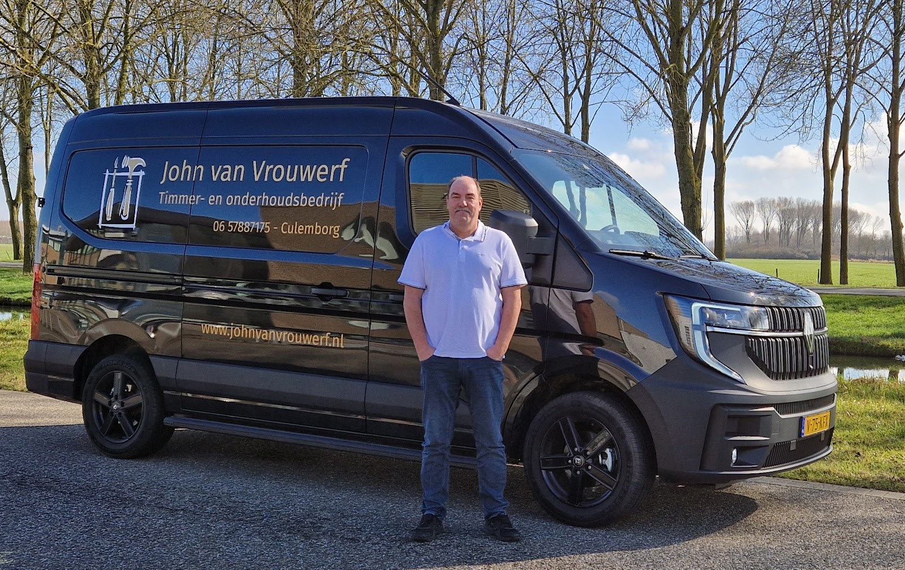
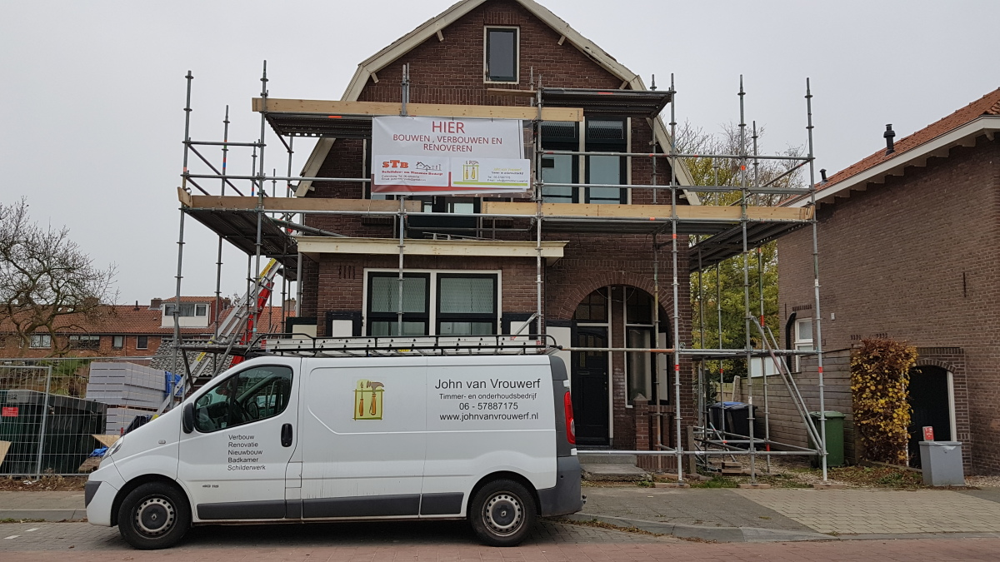
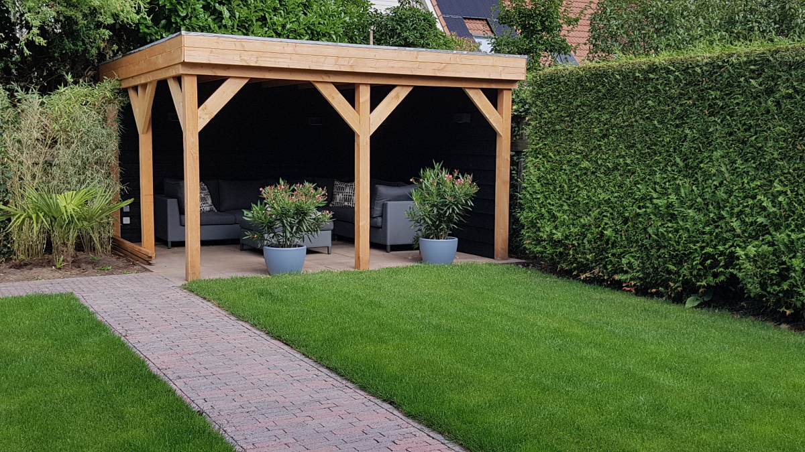
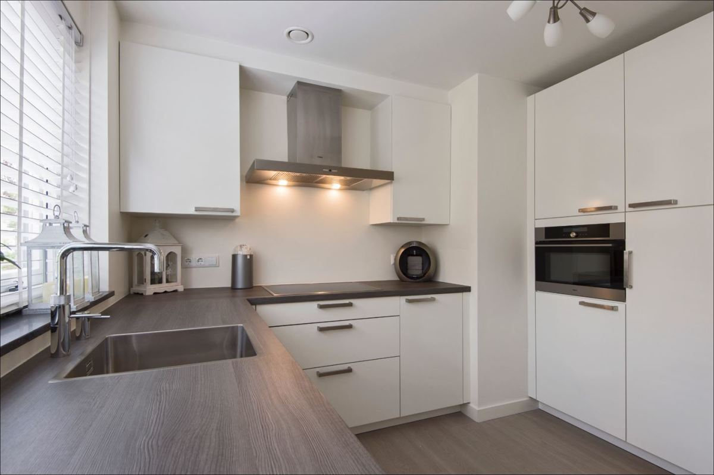
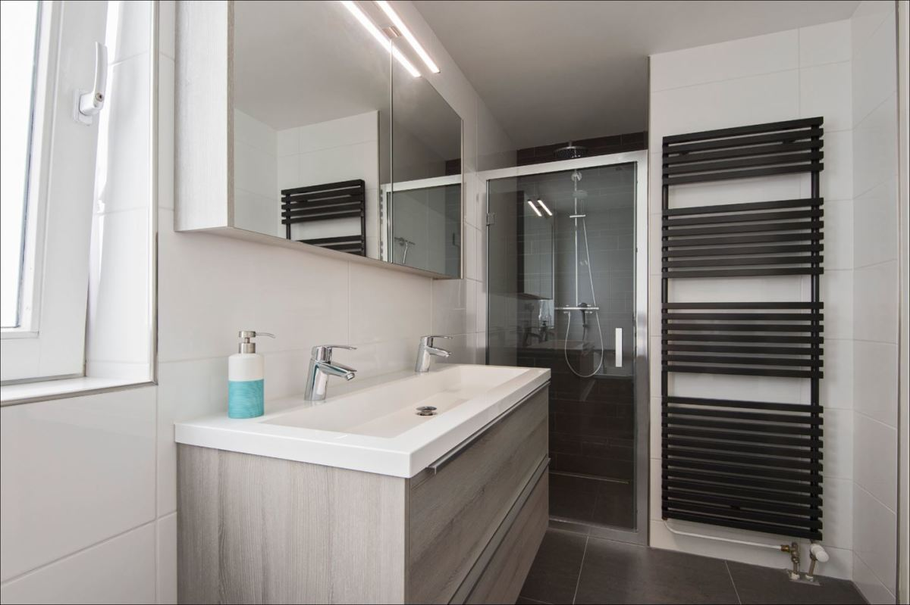
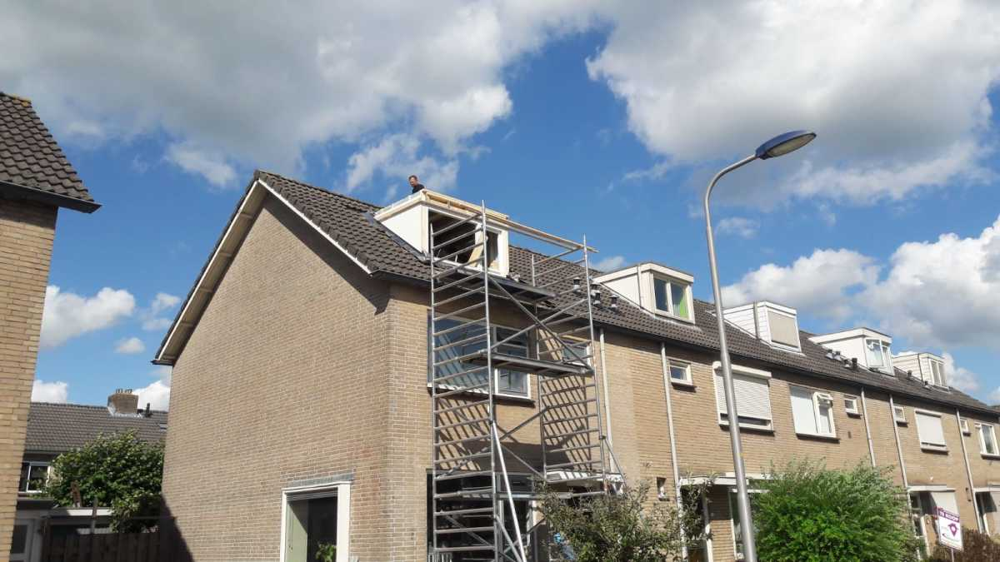
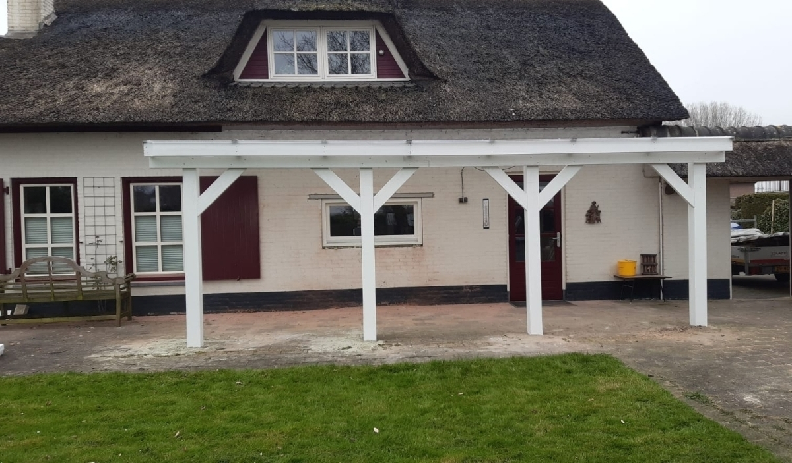
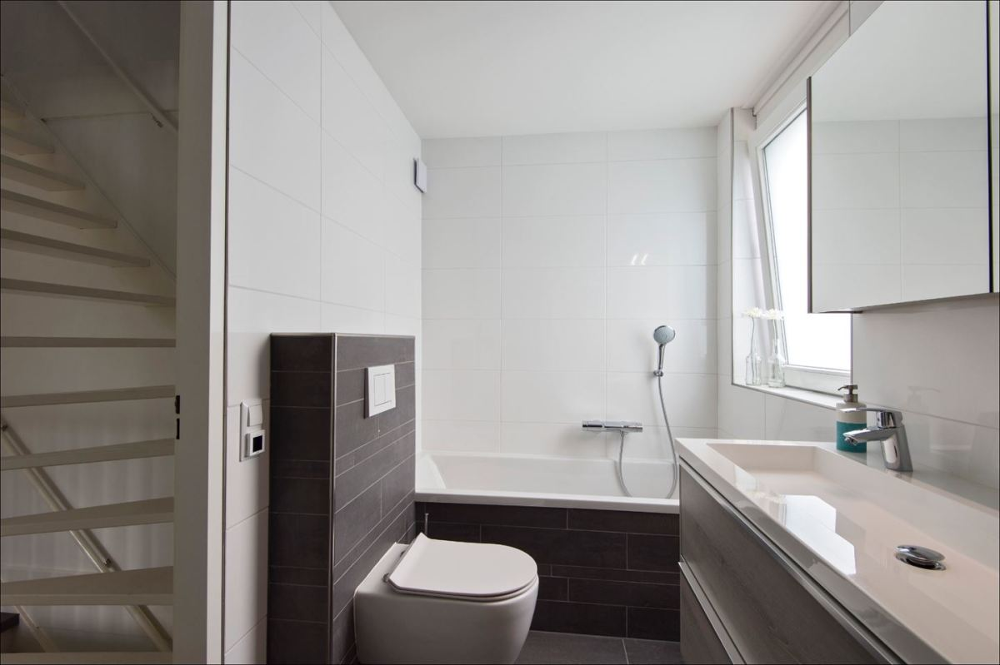
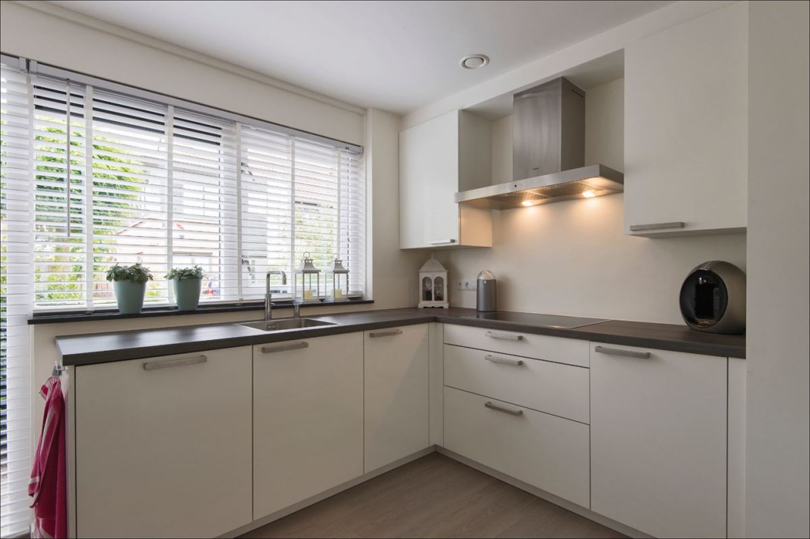

Timmer- en onderhoudsbedrijf in Culemborg
Een vakman die doet wat hij belooft.
Bouwen, verbouwen, renoveren of gewoon goed onderhouden. Van een klemmende deur tot een complete aanbouw. U heeft één aanspreekpunt en alles wordt netjes opgeleverd.

Eén aanspreekpunt, van sloop tot plint.
Veel klanten kiezen voor John omdat ze niet met vijf partijen willen schakelen. Hij voert niet alleen uit, maar denkt ook mee over slimme oplossingen, duurzame materialen en een logische planning.
Timmerwerk, leidingen, elektra, stucwerk, tegels, vloeren en schilderwerk: het komt allemaal onder één dak samen. Zo sluit elk onderdeel netjes aan op het volgende. Met jarenlange ervaring in bouwen, verbouwen en renoveren, vooral in Culemborg en omgeving.
-
1
Vooraf duidelijke afspraken
U krijgt een heldere offerte en weet wat er gebeurt, in welke volgorde en wanneer.
-
2
Tijdens het werk: korte lijnen
De voortgang blijft helder. Keuzes en eventueel meer- of minderwerk bespreken we tussendoor.
-
3
Netjes opgeleverd
Een schone werkplek en een ruimte die gebruiksklaar is. Technisch goed, praktisch en strak afgewerkt.

Groot plan of klein klusje, John pakt het op.
Een complete woningrenovatie of een raam dat klemt: alles zorgvuldig en praktisch aangepakt.
Verbouwen en renoveren
- Aanbouw en complete verbouwing
- Meer ruimte of een nieuwe indeling. Van sloop en ruwbouw tot kozijnen, isolatie en afwerking, van A tot Z.
- Keuken plaatsen
- Oude keuken eruit, leidingen en elektra verleggen, kasten en werkblad plaatsen, apparatuur aansluiten.
- Badkamer en toilet
- Leidingwerk, inbouwreservoir, sanitair, tegels, plafond, verlichting en ventilatie.
- Zolder en nieuwe indeling
- Isoleren, aftimmeren, een extra kamer, wanden plaatsen of verwijderen en doorbraken.
- Vloeren en vloerverwarming
- Vloerverwarming frezen en aansluiten, daarna de vloer strak afwerken.
Onderhoud en herstel
- Schilderwerk binnen en buiten
- Wanden, plafonds, kozijnen, deuren en gevelhout. Met goede voorbereiding, zodat het lang mooi blijft.
- Kozijnen, ramen en deuren
- Repareren, vervangen of opnieuw stellen. Ook een schuifpui of openslaande tuindeuren.
- Daklijsten, boeidelen en gevelbekleding
- Kwetsbare delen aan de buitenkant herstellen, of gevelbekleding plaatsen, bijvoorbeeld Keralit of Trespa.
- Overkappingen en schuttingen
- Een houten overkapping in de tuin of een nieuwe schutting, stevig getimmerd.
- De kleine dingen die blijven liggen
- Kieren, klemmende deuren, loszittend beslag, plinten en kleine reparaties aan wanden en plafonds.
Werk van John
Keukens, badkamers, overkappingen en verbouwingen in Culemborg en omgeving.







Eerst weten wat het kost? John rekent met u mee.
Verhuizen of verbouwen?
Twijfelt u? Dan helpt een duidelijk kostenplaatje. John maakt een realistische inschatting van wat het verbouwen van uw woning ongeveer gaat kosten, afgestemd op uw wensen en de huidige situatie. Zo ziet u vooraf het budget, de mogelijkheden en wat eventueel in fases kan.
Kopersadvies
Wilt u een huis kopen? Weet dan wat de verbouwing ongeveer gaat kosten voordat u een bod uitbrengt. John gaat op verzoek mee naar de bezichtiging, of beoordeelt de woning aan de hand van de foto's en informatie op Funda. Zo biedt u met meer zekerheid.
Vertel John wat u van plan bent.
Bel gerust, of vul het formulier in. U krijgt vrijblijvend advies en desgewenst een duidelijke offerte.
Telefoon 06 57887175 E-mail info@johnvanvrouwerf.nlAdres
Bonkelaarweg 54105 HG Culemborg
Bereikbaar
| ma t/m vr | 07:30 tot 18:00 |
| zaterdag | 08:00 tot 13:00 |
| zondag | gesloten |